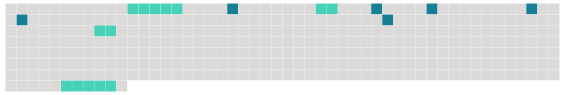

Longueur nb maillons : 10 mentions |
 |
Bientôt, Roger et Paul s'arrêtèrent, ils avaient atteint [le bord de la mer] , et c'est [là] qu'ils voulaient passer la nuit. [L'endroit] était idéal dans [sa] sauvage beauté, avec [ses] caps plongeant à pic dans les flots, [ses] grottes profondes et [ses] immenses blocs de granit superposés, et qui semblaient n'attendre qu'une poussée de quelque géant pour s'effondrer dans l'eau bouillonnante. Mais nul vestige de végétation ne s' [y] voyait, et par des signes, qui ne pouvaient tromper les yeux experts de Roger, les deux jeunes gens comprirent que [cet endroit] avait été récemment visité par un tremblement de terre. [8 phrases] Avant de retourner au campement, ils voulurent explorer davantage [les bords de la mer] |
 |
Il est possible de télécharger la ressource sur la page Ortolang |
Si vous avez des questions ou vous voyez des erreurs, merci d'envoyer un mail à silvia.federzoni89@gmail.com |